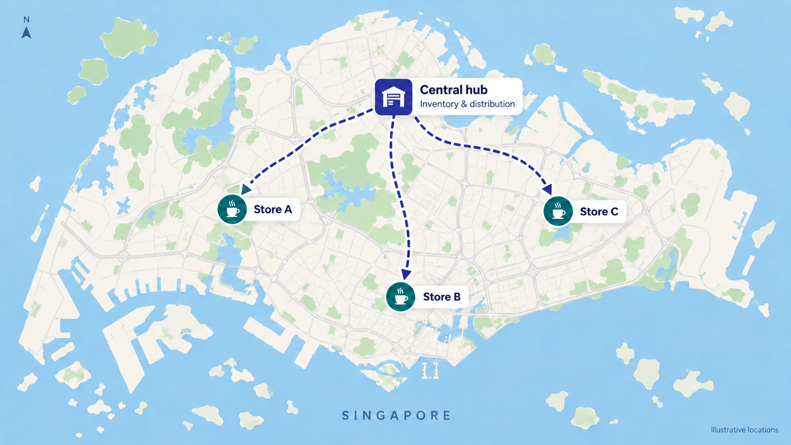

Planning For A Growing Coffee Business
Less than a year into business, a coffee company operates three shops across Singapore, supported by one central inventory and distribution hub.
Its 80 products range from freshly prepared coffee, tea and chocolate drinks to pastries, packaged coffee and merchandise. The hub purchases and holds ingredients, cups and ready-to-sell goods, then supplies the shops for daily service.
With six months of sales already recorded, the team wants to anticipate what customers will require over the next week and the next full month. Turning those records into forecasts can help the business prepare enough stock while limiting excess.
This release focuses on demand forecasting. Inventory and distribution decisions are future extensions once starting stock, lead times, supplier constraints and costs are available.
